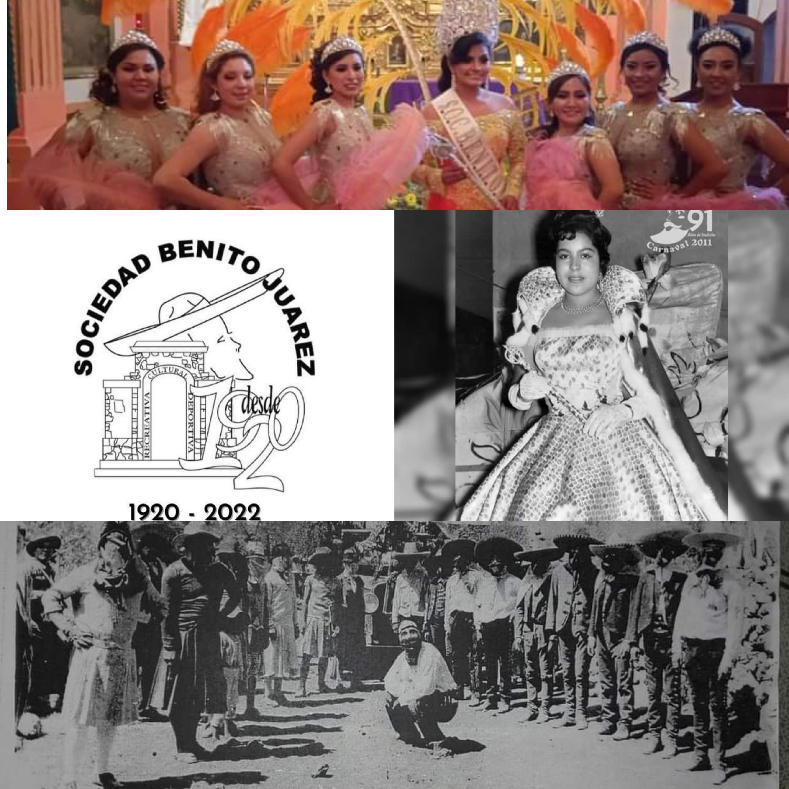

Fue el representado por la senora Marcelina Martinez Chirinos, y que mas adelante dara origen a la Sociedad Mutualista Benito Juarez a partir de 1920. Posteriormente, en 1924 se reanuda el Carnaval como un grupo espontáneo, sin organización, representado por el señor Camilo Castañeda y otras personas más de los desaparecidos barrios de Tetlalpan, Santa Cruz y San Jacinto. En 1929 se forma la organizacion o grupo de Carnaval Sociedad Recreativa Benito Juarez, quitandole el nombre de Mutualista, ya que se presenta como un grupo organizado representado por un comite, los participantes de la comparsa y el carro alegorico y la reina del Carnaval.
DATO CURIOSO
En 1948 por desorganizacion y por falta de interes de los directivos y socios, a ultima hora participo la comparsa sin reina ni carro alegorico.